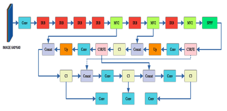
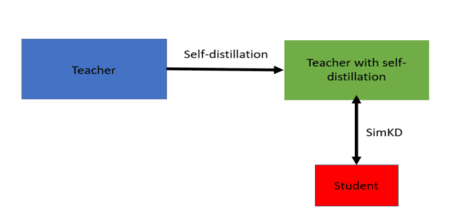

|

|
AL-YOLO: Accurate and Lightweight Vehicle and Pedestrian Detector in Foggy Weather
Behdad Sadeghian Pour,
Hamidreza Mohammadi Jozani,
Shahriar B. Shokouhi,
Abstract—One of the most critical tasks in computer vision is
object detection. While object detection networks have demonstrated high accuracy in normal weather conditions, they are
not reliable in adverse weather. To address this issue, we have
enhanced a smaller version of YOLOv5, known as YOLOv5s, to
be compatible with challenging weather conditions and devices
with limited resources. As a result, we modified the YOLOv5s
architecture to extract significant features. We used a lightweight
transformer network known as MobileViTv2 with an Inverted
Residual Block, which is efficient in terms of computational
resources. Furthermore, the YOLOv5 Neck has incorporated
the C3RFE module to improve feature extraction efficiency in
adverse weather. In order to assess the effectiveness of our
suggested method, we conducted a thorough evaluation using
a Foggy-Cityscape dataset. The results demonstrate that in
comparison to the YOLOV5s, the algorithm has a 33% decrease
in the number of model parameters and also increases by about
2% in mAP. Comparative analysis demonstrates the algorithm’s
superiority and effectiveness. Our code and pretrained models
are available at: https://github.com/BehdadSDP/AL-YOLO.
|
|
|
CNN and ViT as Dual Teachers for Knowledge Distillation in Human Action Recognition
Hamidreza Mohammadi Jozani,
Behdad Sadeghian Pour,
Shahriar B. Shokouhi,
Abstract—Recognizing actions in still images remains
difficult, even if Convolutional Neural Networks (CNNs) have
made significant advancements in picture categorization. The
main difficulty in recognizing human action from photographs
is the lack of visual indications of temporal information in static
photos. Presently, the most effective approaches involve training
a deep Convolutional Neural Network directly on images for
action recognition. Nevertheless, these approaches include
numerous parameters and incur substantial computational
expenses. Moreover, the majority of existing techniques have
utilized supplementary information, such as human body
movements, relevant objects, and the visual characteristics of
body parts, obtained from photos. These approaches utilize
object detection or pose estimation as an auxiliary method in
both the training and testing phases. Creating these annotations
is a laborious and expensive process. In this paper, we utilize a
convolutional neural network (CNN) as the student model,
whereas a combination of a larger convolutional neural network
(CNN) and a vision transformer (ViT) function as the teacher
model. The CNN teacher model collects local picture features,
while the ViT teacher emphasizes global features through an
attention mechanism. Both local and global features can be
advantageous in human action recognition; therefore, we
attempt to integrate ViT and CNN teachers to develop the
optimal teacher for the student model. This is achieved through
a loss-aware module, which adaptively allocates sample-wise
reliability to each teacher's prediction based on ground-truth
labels, assigning greater weights to predictions that closely
match one-hot labels. Our method achieves a mean Average
Precision (mAP) of 95.17% on the Stanford40 dataset, which is
the highest performance.
|
|

|
Knowledge Distillation with the Reused Teacher
Classifier Framework for Action Recognition in
Still Images
Hamidreza Mohammadi Jozani,
Behdad Sadeghian Pour,
Shahriar B. Shokouhi,
Abstract—Recognizing actions in still images remains
difficult, even if Convolutional Neural Networks (CNNs) have
made significant advancements in picture categorization. The
main difficulty in recognizing human action from photographs
is the lack of visual indications of temporal information in static
photos. Presently, the most effective approaches involve training
a deep Convolutional Neural Network directly on images for
action recognition. Nevertheless, these approaches include
numerous parameters and incur substantial computational
expenses. Moreover, the majority of existing techniques have
utilized supplementary information, such as human body
movements, relevant objects, and the visual characteristics of
body parts, obtained from photos. These approaches utilize
object detection or pose estimation as an auxiliary method in
both the training and testing phases. Creating these annotations
is a laborious and expensive process. In this paper, we propose
a knowledge distillation framework to enhance the process of
recognizing actions in still images. This framework uses a
technique that employs the discriminative classifier from the
pre-trained teacher model for direct usage in student inference.
Additionally, we train a student encoder by aligning features
using a single ℓ2 loss. Also, self-distillation is employed to
enhance the performance of instructor networks, hence leading
to an increase in the accuracy of student networks. Our
framework achieves a mean Average Precision (mAP) of
96.54% on the Stanford40 dataset, which is the highest
performance.
|
Teaching Assistant
- • Micro Processor Programming (for Under Graduate Students), Fall 2020
- • Digital Signal Processing (for Graduate Students), Winter 2023
|
|